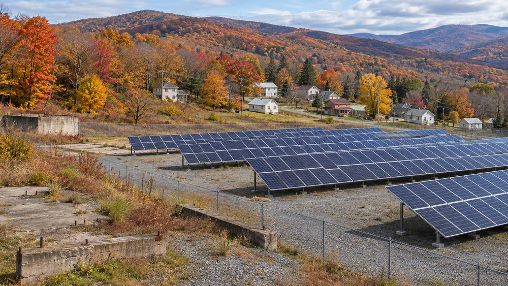

"지붕 없는 주민도 태양광 요금 혜택을"…미국 웨스트버지니아 '커뮤니티 에너지' 입법 촉구 기고

유휴 부지 공유 태양광을 여러 가입자가 나눠 쓰는 제도…필자들 "24개 주에서 효과, 주 의회 나서야"
미국 웨스트버지니아에서 주차장·들판·옛 산업 부지 같은 곳에 공유 태양광을 짓고 여러 가입자가 전기요금 공제를 나눠 받는 '커뮤니티 에너지' 제도를 주 의회가 도입해야 한다는 기고가 나왔다. 필자들은 주 안에서 지붕 태양광을 단 주택 소유자가 0.01%에 그친다며, 세입자와 그늘진 지붕을 가진 주민, 저소득층이 혜택에서 빠져 있다고 주장했다. 이들은 주택 소유율이 흑인 주민 44%, 백인 주민 76%라는 자료를 들어 지붕이 있어야만 참여할 수 있는 지금 구조가 격차를 키운다고 봤다. 또 미국 태양광산업협회(SEIA) 집계로 2025년 주 안의 태양광 일자리가 394개뿐이고, 환경보호청(EPA)이 태양광 개발 후보로 꼽은 오염·방치 부지(브라운필드)가 6,849곳에 이른다고 소개했다. 필자들은 커뮤니티 에너지가 이미 24개 주에서 성과를 냈다며 독자들에게 주 의원 면담을 권했다. 이 글은 필자들의 주장을 담은 기고다.
시민에너지 관점
지붕 태양광을 단 주택이 0.01%에 그친다는 숫자는, 지붕을 가진 사람만 태양광 혜택을 누리는 구조의 한계를 보여 준다. 공유 태양광 요금 공제가 전력회사와 다른 소비자에게 부담을 넘긴다는 우려도 있지만, 미국 24개 주가 이미 이 제도를 운영하며 일자리와 요금 절감을 함께 만들고 있다는 것이 필자들의 답이다. 아파트와 세입자가 많은 한국에서는 더 절실한 문제로, 공유 발전소를 주민 조합이 소유해야 요금 혜택과 수익이 모두 지역에 남는다. 공동주택 주민과 세입자도 마을 발전소의 지분과 요금 혜택을 나눌 수 있는 제도를 서둘러 논의해야 한다.
출처: Black By God 2026-11-05 Cory Chase·Alex Dresdner(기고) 원문 보기
「屋根がない住民にも太陽光の電気料金の恩恵を」…米ウェストバージニア州で「コミュニティ・エネルギー」立法を求める寄稿
遊休地の共同太陽光を複数の加入者が分け合う制度…筆者ら「24州で成果、州議会は動くべき」
米国ウェストバージニア州で、駐車場や野原、旧産業用地などに共同の太陽光発電所を建て、複数の加入者が電気料金の控除を分け合う「コミュニティ・エネルギー」制度を州議会が導入すべきだとする寄稿が掲載された。筆者らは、州内で屋根置き太陽光を設置した住宅所有者は0.01%にとどまり、賃借人や屋根が日陰になる住民、低所得層が恩恵から外れていると主張した。また、持ち家率が黒人住民44%、白人住民76%というデータを挙げ、屋根がなければ参加できない今の仕組みが格差を広げているとみた。さらに、米国太陽エネルギー産業協会（SEIA）の集計で2025年の州内の太陽光関連雇用は394人分にすぎず、環境保護庁（EPA）が太陽光開発の候補とした汚染・放置地（ブラウンフィールド）が6,849か所に上ると紹介した。筆者らは、コミュニティ・エネルギーがすでに24州で成果を上げているとして、読者に州議会議員との面会を勧めた。この記事は筆者らの主張をまとめた寄稿である。
市民エネルギーの視点
屋根置き太陽光のある住宅が0.01%にとどまるという数字は、屋根を持つ人だけが太陽光の恩恵を受ける仕組みの限界を示している。共同太陽光の料金控除が電力会社やほかの消費者に負担を回すという懸念もあるが、米国の24州がすでにこの制度を運用し、雇用と料金の節約を共に生み出しているというのが筆者らの答えだ。マンションと賃借人が多い韓国ではいっそう切実な問題で、共同の発電所を住民組合が所有してこそ、料金の恩恵と収益がともに地域に残る。集合住宅の住民や賃借人も村の発電所の持分と料金の恩恵を分け合える制度を急いで議論すべきだ。
出典: Black By God 2026-11-05 Cory Chase·Alex Dresdner(op-ed) 原文を読む
"没有屋顶的居民也应享受光伏电费优惠"…美国西弗吉尼亚州刊文呼吁为"社区能源"立法
由多名用户分享闲置土地共享光伏的制度…作者称"已在24个州见效，州议会应行动"
美国西弗吉尼亚州有文章呼吁州议会引入"社区能源"制度，即在停车场、田野、旧工业用地等处建设共享光伏电站，由多名用户分享电费抵扣。作者称，州内安装屋顶光伏的房主仅占0.01%，租户、屋顶被遮挡的居民和低收入群体都被排除在外。他们援引黑人居民住房自有率44%、白人居民76%的数据，认为必须拥有屋顶才能参与的现行结构正在扩大差距。文章还介绍，据美国太阳能产业协会（SEIA）统计，2025年州内光伏岗位仅有394个，而美国环境保护署（EPA）列为光伏开发候选的污染或闲置土地（棕地）多达6,849处。作者表示社区能源已在24个州取得成效，并建议读者与州议员会面。本文为作者表达个人主张的投稿。
市民能源视角
安装屋顶光伏的住宅仅占0.01%，这一数字显示了只有拥有屋顶的人才能享受光伏红利的结构局限。有人担心共享光伏的电费抵扣会把负担转嫁给电力公司和其他用户，但作者的回答是，美国已有24个州在实施这一制度，同时创造了就业和电费节省。在公寓和租户众多的韩国，这个问题更加迫切；只有由居民合作社拥有共享电站，电费优惠和收益才能都留在当地。应尽快讨论让公寓居民和租户也能分享村庄电站股份和电费优惠的制度。
来源: Black By God 2026-11-05 Cory Chase·Alex Dresdner(기고) 查看原文
"Let residents without a roof share in solar savings": op-ed urges West Virginia to pass community energy law
Shared solar on unused land split among many subscribers; authors say it has worked in 24 states and lawmakers should act
An op-ed published in West Virginia calls on the state legislature to adopt "community energy," a system in which shared solar arrays are built on parking lots, fields or former industrial sites and many subscribers share credits on their power bills. The authors argue that only 0.01% of homeowners in the state have rooftop solar, leaving out renters, residents with shaded roofs and low-income households. Citing homeownership rates of 44% for Black residents and 76% for white residents, they say the current setup, which requires a roof to take part, widens the gap. They also note that the state had only 394 solar jobs in 2025 by the Solar Energy Industries Association's count, while the Environmental Protection Agency has identified 6,849 potential brownfield sites for solar development there. The authors say community energy has proven successful in 24 states and urge readers to meet their state legislators. The piece is an opinion article reflecting the authors' views.
Citizen Energy View
The figure that only 0.01% of homes have rooftop solar shows the limits of a system in which only people with roofs benefit from solar. Some worry that bill credits for shared solar shift costs onto utilities and other customers, but the authors' answer is that 24 U.S. states already run such programs while creating jobs and savings. The problem is even more pressing in Korea, with its many apartments and renters, and only when resident cooperatives own shared plants do both bill savings and profits stay local. Korea should move quickly to discuss rules that let apartment dwellers and renters share in the equity and bill benefits of village power plants.
Source: Black By God 2026-11-05 Cory Chase·Alex Dresdner(op-ed) Read the original